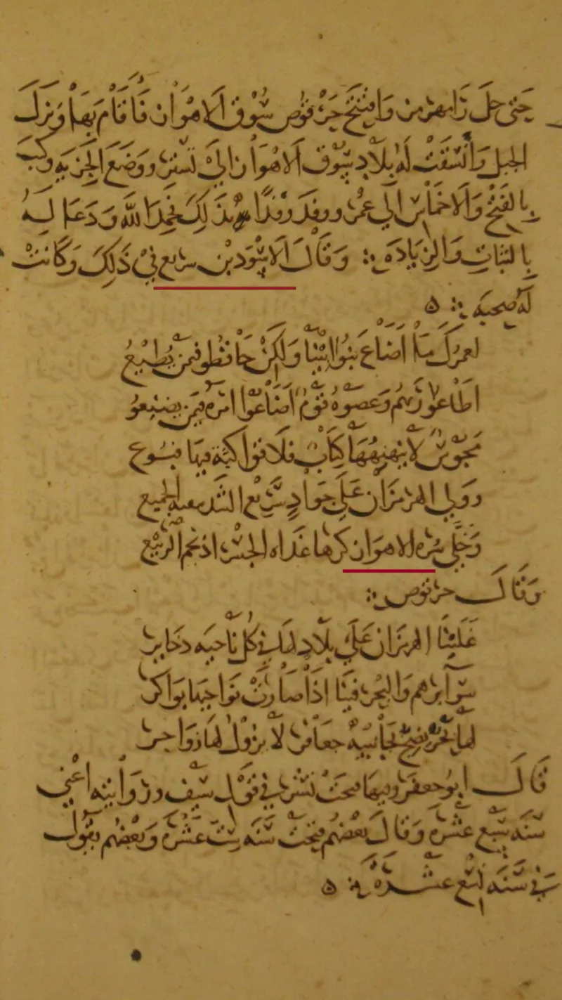
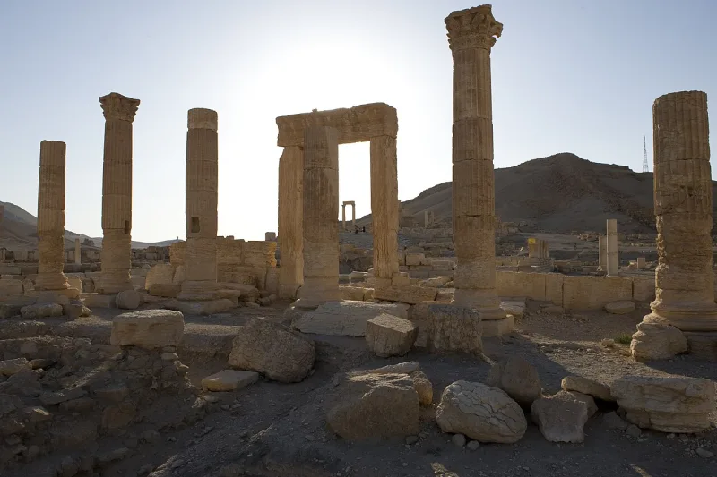

The satanic verses, recorded by al-Tabari and Ibn Sa'd
ContestedMuslim scholars have a real answer here. Say so before your friend does.
What abrogation is
Quran 2:106 says that when Allah abrogates a verse he brings a better one. Quran 16:101 says the same.
That is naskh: later revelation cancels earlier revelation. Quran 16:101 also records the reaction of Muhammad's contemporaries.
They said: you are but a forger.
The sharpest test case
Early Islamic historians record an incident. They are al-Tabari, Ibn Sa'd and al-Waqidi.
Muhammad wanted peace with the Quraysh. After Quran 53:19-20 he praised the goddesses al-Lat, al-Uzza and Manat: "these are the exalted cranes whose intercession is hoped for." The words were later traced to Satan and withdrawn.
Early scholars read Quran 22:52 as the comment on it. Satan threw something into the recitation of every prophet.
What a Harvard study found
Shahab Ahmed wrote a book on this. It is Before Orthodoxy: The Satanic Verses in Early Islam, from Harvard University Press.
He showed the story was a normal part of Muslim memory for about 150 years. Only later was it rejected by all.
The Muslim answer, at full strength
On abrogation, SeekersGuidance answers that naskh is staged teaching, not divine self-correction. Alcohol was banned in three steps.
Each ruling was right for its moment, and Jewish and Christian scripture supersede earlier law too. On the incident, al-Albani and others answer on the chains.
Every chain is broken, with no companion eyewitness. It is absent from Bukhari and Muslim.
It contradicts Quran 53:3-4. Ibn Khuzaymah called it a fabrication of the heretics.
How strong is this argument?
Two parts, two answers. Abrogation itself is admitted, since 2:106 says it plainly.
Whether it is a flaw is a judgment, and the staged-teaching reply is coherent. The incident is different.
Ahmed's work is weighty and 22:52 reads naturally as a response to something real. But no single sound chain exists, so this site will not call it admitted.
What to say
"Have you read what al-Tabari records about Surah 53? I would rather ask than assume."



How they answer this — at its strongest
They say naskh is staged teaching, and the cranes story has no sound chain.
On abrogation, SeekersGuidance answers that naskh is law given in stages. It is not God correcting Himself. It is teaching by steps. Wine was banned in three moves. Each ruling was right for its moment. Jewish and Christian scripture also sets aside earlier law, in the sacrifices and in Acts 10.
On the satanic verses, al-Albani in Nasb al-Majaniq and others answer on the chains. Every chain of the story is broken. No Companion saw it. It is not in Bukhari or Muslim. It clashes with the Quran's own promise at 53:3-4. And its many rival versions mark it as tale-teller stuff. Ibn Khuzaymah called it a fabrication of the heretics. Scholars from him through to al-Albani reject it on how it was passed down.
The verdict
Abrogation is admitted; the cranes story is not, since no chain is sound.
Two parts, two results. Abrogation as a fact is granted. Quran 2:106 is explicit, and classical scholars listed the abrogated verses. Whether it is a flaw is a judgment call, and the staged-law steelman is coherent.
On the cranes incident, Shahab Ahmed showed that early Muslims accepted the story across the board. That carries real weight. And 22:52, with 17:73-75, reads most naturally as a reply to something real. But the chain critique is genuine. No single sound chain exists. On this site's own standard it cannot be graded admitted.
The historical case is stronger than most Muslims allow. The chain case is stronger than most critics allow.
Sources
- Shahab Ahmed — Before Orthodoxy: The Satanic Verses in Early Islam (Harvard UP)
- Answering Islam — The Story of the Cranes
- SeekersGuidance — What Is Abrogation (Naskh)?